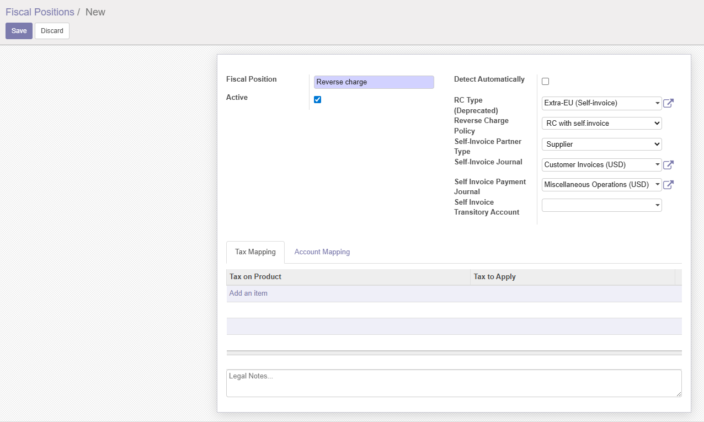
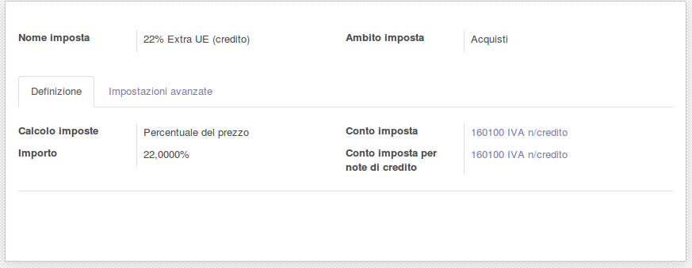
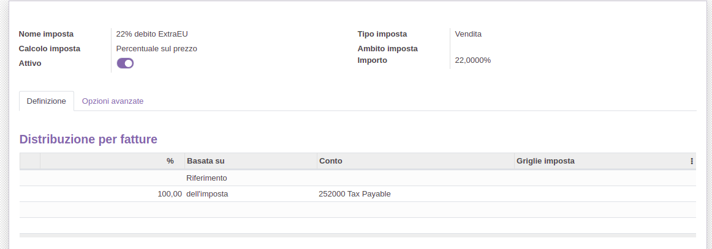

Manage Reverse Charge Tax for Italy

Gestione IVA in reverse charge per Italia






Module to manage reverse charge tax in vendor bills and customer invoices.
Tis module allows you to automate the accounting entries linked to invoices from intra-EU and extra-EU suppliers. In order to manage the reverse charge tax a self-invoice is created and an account entry is created too. After these 3 entries, the amount to pay to supplier is the invoice total without tax.
All fiscal and legal Italian laws are satisfied,
When supplier invoice is cancelled, the self invoice is cancelled too and account entry is deleted.
For customer invoices tha due amount is evaluated.

Modulo per gestire l'inversione contabile (reverse charge) nelle fatture fornitore e nelle fatture clienti.
Questo modulo permette di automatizzare le registrazioni contabili collegate alle fatture fornitori intra UE ed extra UE, necessarie per gestire l'inversione contabile IVA. Per gestire l'inversione contabile viene generata un'auto-fattura di vendita che storna l'IVA in acquisto e una registrazione di giroconto per azzerare il credito derivante dall'auto-fattura. Con queste 3 operazioni il debito verso la fattura di acquisto è pari alla sola imponibile e l'IVA è riportata nei documenti fiscali come previsto dalla normativa.
L'annullo della fattura fornitore, annulla anche l'auto-fattura ed elimina la registrazione di giroconto.
Per le fatture di vendita viene soltanto calcolato l'importo da incassare.


Accounting » Configuration » Account » Taxes
Create sale tax 22% intra UE:
Create purchase tax 22% intra UE: Create sale tax 22% extra UE: Create purchase tax 22% extra UE: ☰ Accounting > Configuration > Account > RC Types Create reverse chare tye Intra UE (autofattura): ☰ Accounting > Configuration > Account > Fiscal Position


Contabilità » Configurazione » Contabilità » Imposte
Creare l'imposta 22% intra UE Vendita:
Creare l'imposta 22% intra UE Acquisti:
Creare l'imposta 22% extra UE Vendita: Creare l'imposta 22% extra UE Acquisti: ☰ Contabilità > Configurazione > Contabilità > Tipi di reverse charge Creare il tipo reverse charge Intra UE (autofattura): ☰ Contabilità > Configurazione > Contabilità > Posizioni fiscalie

Authors | Autori:
Contributors | Partecipanti:
This module is maintained by the SHS_AV s.r.l..
This module is part of l10n-italy project.
Published information on | Informazioni pubblicate: 2024-06-09